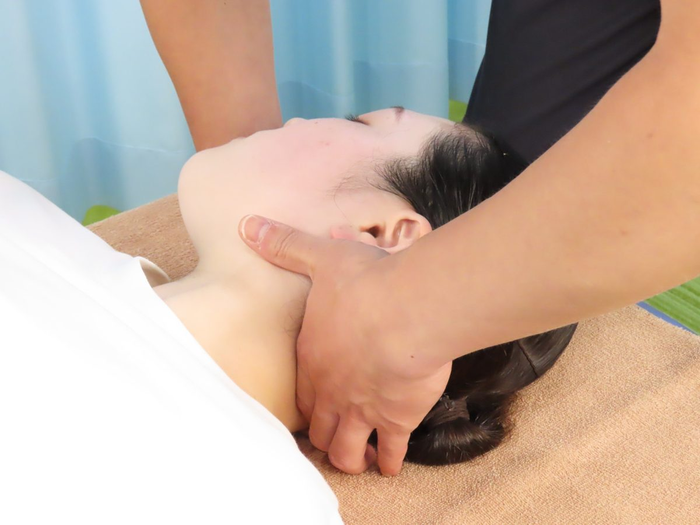

はやし美容整体院
骨格から整える、美容整体
骨格矯正・猫背矯正・産後矯正。はやしハリきゅう整骨院の「骨ぴか整体」と、体幹を育てる「インデプス」で、見た目の姿勢とカラダの使い方を整えます。

こんなお悩みはありませんか？
- 猫背や巻き肩で横から見た姿勢が気になる
- 反り腰でお腹がぽっこり出て見える
- 出産してから、骨盤まわりや体型が戻らない気がする
- 肩や首がいつもこっていて顔まわりがすっきりしない
- 左右の肩の高さや、スカートが回るなどの歪み（ユガミ）が気になる
- トレーニングが続かず、体幹に力が入りにくい
姿勢や体型の悩みの多くは、骨格のユガミと、カラダの使い方のくせから生まれます。はやし美容整体院では、まず骨格を整え、そのうえで整った状態を保てるカラダづくりをお手伝いします。

骨ぴか整体（骨格矯正）
はやしハリきゅう整骨院のオリジナル骨格矯正です。骨盤や背骨を中心にカラダ全体のユガミを整え、整った状態をご自分で保てるように、カラダの使い方もセットでお伝えします。
初回と定期券の更新のときには、姿勢分析「ぴかっto！」で正面と横から姿勢を撮影し、今の姿勢のくせを数字とグラフでお見せします。変化が目で見て分かります。
料金（税込）自費メニュー
| 初回・単発 | 4,400円 |
|---|---|
| 30日定期券（使い始めた日から30日間、何回でも） | 18,000円 |
| 学生の方 | 初回 2,200円／定期券 9,000円 |

インデプス（EMS）
16,600Hzという高周波が体幹部（インナーマッスル）まで届くため、通常はトレーニングしにくいインナーマッスルにも最適です。30分寝てるだけで、疲労も怪我もせず運動ができます。
体幹の中心である腹筋を「使える筋肉」に育てることで、骨ぴか整体で整えた姿勢を保ちやすくなります。
- 筋力アップ
- 姿勢改善
- シェイプアップ
- ダイエット
料金（税込）自費メニュー
回数券の有効期限は買った日から6か月です。
| お試し（1回） | 1,320円 |
|---|---|
| 単発 | 3,850円 |
| 24回券 | 49,500円 |
| 32回券 | 60,500円 |

おすすめの受け方
1. 骨ぴか整体で整えるまずは骨格のユガミを整え、姿勢の「現在地」を知るところから始めます。
2. インデプスで育てる整った姿勢を支える体幹（腹筋）を、寝たまま30分で鍛えます。
3. カラダの使い方で保つ座り方・立ち方・歩き方など、整った状態を保つコツをお伝えします。
骨ぴか整体の30日定期券とインデプスを組み合わせると、整える・育てる・保つを同じ期間にまとめて進められます。
アクセス・受付時間
| 店舗 | はやし美容整体院 本店 |
|---|---|
| 住所 | 〒067-0031 北海道江別市元町32-1（はやしハリきゅう整骨院 江別本院と同じ建物） |
| 電話 | 011-384-5454 |
| 受付時間 | 平日・土日祝 9:00〜12:00／15:00〜19:00 水曜 9:00〜12:00 予約優先制 |
| 定休日 | 第一水曜日・水曜日午後 ※ご予約の際にご確認ください |
まずは今の姿勢を見てみませんか
予約優先制 〒067-0031 北海道江別市元町32-1